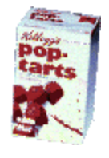
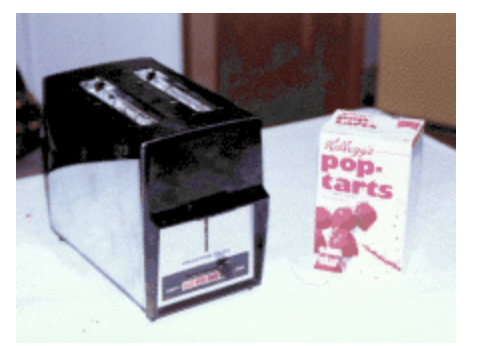
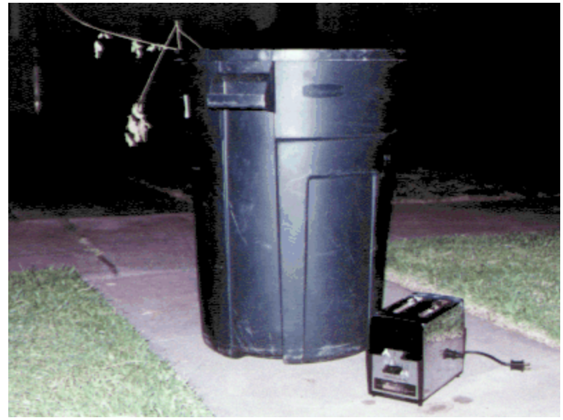

Strawberry Pop-Tart Blow-Torches
Last Updated: 2G August 1994
Abstract
Strawberry Pop Tarts may be a cheap and inexpensive source of
incendiary devices. Toasters which fail to eject Pop Tarts
cause the Pop Tarts to emit flames 10-18 inches in height.
Introduction
Last year, an article by well-known newspaper columnist
Dave Barry
noted that
Kellogg's Strawberry Pop Tarts
(SPTs) could be made to emit flames "like a
blow torch" if left in a toaster too long. Given previous
work in the field of food-entertainment (see
Fun With Grapes - A Case Study
), it was obvious that this was a new frontier that requires further exploration.
The present work describes our independent verification and experience with SPT-based combustion.
Material Used
Only two basic materials are needed to cause SPT-combustion: a (hopefully inexpensive) toaster and some Strawberry Pop Tarts (Figure1). In this work, the authors used Kellogg's Strawberry Pop Tarts with Real Smucker's Fruit. SPTs can be obtained either with or without frosting; the non-frosted variety were used for this experiment.

Figure 1. Toaster and Strawberry Pop Tarts
In addition to the basic materials, a number of safety-related items were needed to conduct this experiment. First, a suitable location for the experiment was required, it being expected that the kitchen was not the appropriate place for blow-torching SPTs. The author's driveway was chosen as a suitable site. Second, an appropriate means for extinguishing the SPTs would be needed; a research assistant brought along some baking soda for the purpose.
Experiment Preparation
The toaster and SPT both had to be properly prepared for this experiment. In order to guarantee that the SPT would receive sufficient heat to begin combustion, the toaster was set to its highest setting and the lever was jammed in the "down" position using adhesive cellophane. A SPT was removed from the box and its protective packaging and carefully placed into the toaster slot (Figure 2).

Figure 2. Preparation of Toaster and SPT
Next, the toaster and SPT were taken to the driveway, and an extension cord was arranged to provide power to the toaster. At this point, we were ready to begin the experiment.

Figure 3. Toaster Prepared for SPT combustion
The Experiment and Observations
The toaster was plugged in. First the toaster went through a normal "toasting" cycle (approximately 60 seconds), which more than thoroughly cooked the SPT (since the toaster was set to its darkest setting). By this point we could definitely detect a burnt SPT aroma. The toaster then attempted to eject the SPT, but was prevented from doing so by the adhesive cellophane. The toaster then began emitting loud rattling and buzzing noises due to its inability to eject the SPT.
(At this point the researchers became somewhat concerned that the noise from the toaster would wake the neighbors and attract undue attention. However, we decided that we were already committed to the experiment and that the neighbors would be able to sacrifice some sleep in the name of science.)
Soon thereafter, large amounts of smoke began pouring out of the toaster. The researchers noticed that some of the neighbors down the street were beginning to get a little curious, but the experiment proceeded nonetheless. Approximately 40 seconds later, small flames began licking their way out of the toaster. The flames steadily grew larger and larger until reaching a maximum height of about 18 inches above the top of the toaster. Figure 4 presents a time-series collage of the flames emitted from the SPT.

Figure 4. Time Series Photograph of Flaming SPT
As the flames were reaching their maximum height, the toaster abruptly stopped making buzzing noises. We speculate that the flames had by this point shorted the electronics within the toaster. The toaster was quickly disconnected from the primary electrical source to avoid any potential damage to the author's house. At this point, the researchers also realized that the heat could inadvertently melt the adhesive cellophane and cause the flaming SPTs to suddenly eject from the toaster. Unfortunately, this did not occur. The flames continued for several minutes.
At this point there was some slight concern that the flames might take considerable time to diminish. We then enlisted the help of a reluctant research assistant to sprinkle baking soda on the flames. (The reluctance was understandable given the potential for premature SPT ejection described in the above paragraph.) The baking soda quickly extinguished the flames and produced still further smoke (Figure 5a).

Figure 5. Extinguising the SPT
Once the flames were extinguished, the researchers noted an unanticipated problem: what to do with the (now defunct) toaster and the spent SPT. It became obvious that the toaster could not be returned to the author's house due to both a continued potential fire hazard and the smell of burnt strawberries. In addition, it was noted that the toaster was still "too hot to handle," necessitating the use of a nearby garden hose to cool the toaster off. This is illustrated in Figure 5b. Finally it was decided to just leave the toaster by the curb for the sanitation experts to pick up the next morning (Figure 6.)

Figure 6. Toaster Disposal
Summary and Recommendations
In summary, overcooking the SPT did produce a good size flame. The effect was not as pronounced as the researchers had hoped, but was satisfying nonetheless. The research assistant noted that the flames produced did appear to have some color variation. We believe that frosted SPTs may successfully produce even larger torches. Further research in this area is warranted.
We did desire to repeat the experiment with the remaining five SPTs, but we could not do so because there were no more suitable toasters available for further experiments. In the future, we recommend that toasters be sold in six-packs to accomodate important SPT research. Instead, the remaining SPTs were sacrified over the course of the next several days in private, undocumented consumption experiments.
Acknowledgements
Special thanks to Jennifer "Svetlana" Reckard for her suggestions and proofreading of this work.
{kind=link}